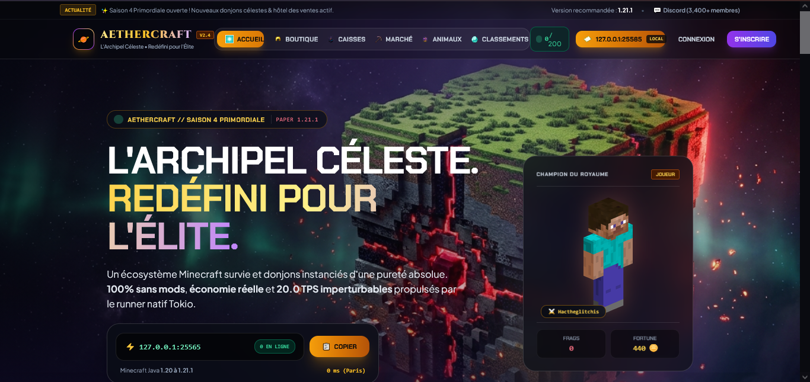

Découvrez l'architecture complète intégrant un serveur PaperMC 1.21.1, un plugin custom de 54 classes Java 21, une interface Web en direct sous Waitress (port 5000), et une base SQLite partagée.

Une synergie complète entre le serveur de jeu, le plugin exclusif, l'API web et le superviseur système.
Noyau PaperMC Build 133 optimisé sous JVM Aikar G1GC. Intègre l'anticheat GrimAC basé sur la physique des paquets, LuckPerms, et le framework MapEngine.
54 classes modulaires : Banques Dofus privées, Hôtel des Ventes P2P, Bourse des Minerais, Donjons instanciés, Familiers 3D, OneBlock infini et écrans MapBrowser.
Propulsée par Python Flask et Waitress WSGI (port 5000). Raccordée en temps réel au serveur via un bridge RCON sécurisé doté d'une file d'attente hors-ligne persistante.
Base relationnelle partagée de 30 tables évitant toute désynchronisation. Superviseur Rust Tokio téléchargeant et vérifiant les binaires par SHA-256.